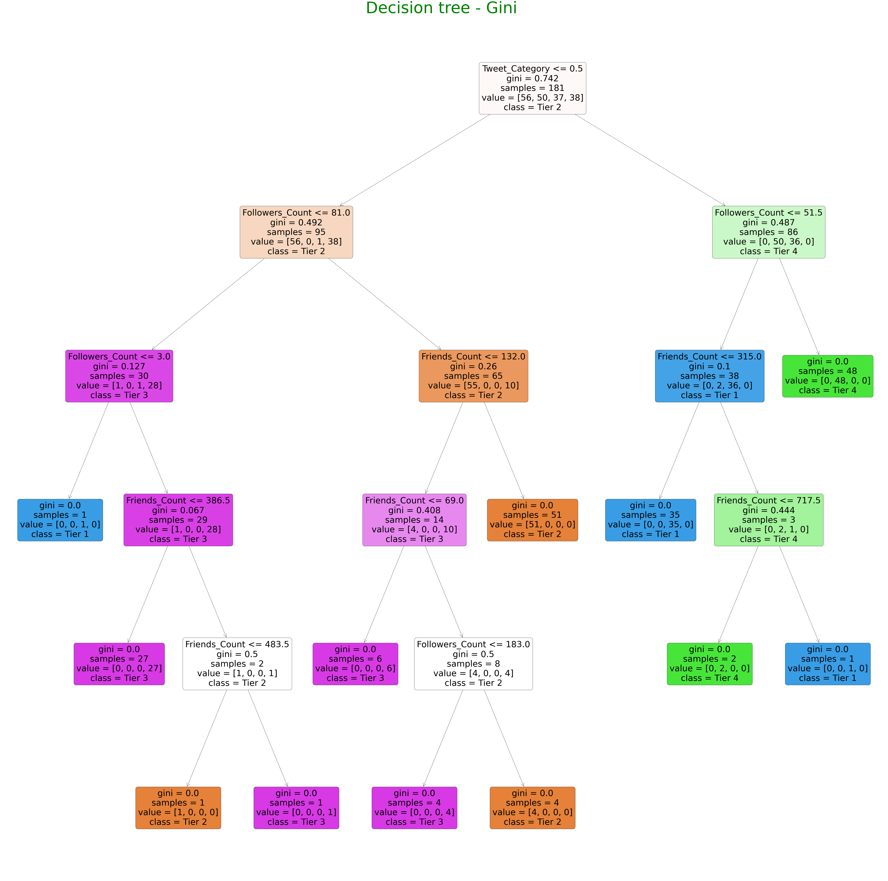
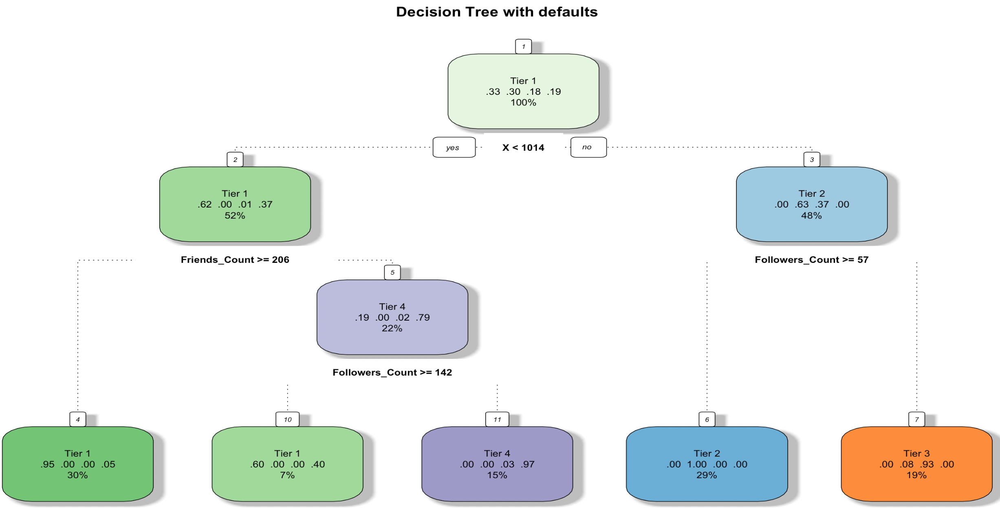
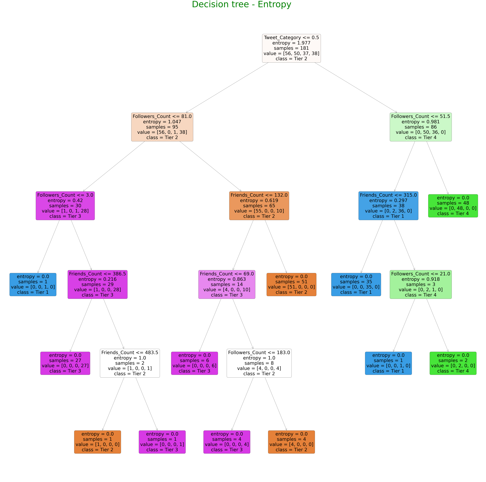
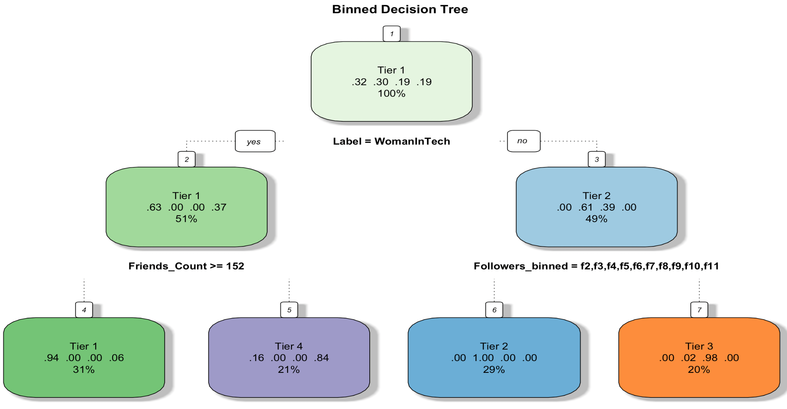

Visualization using R


Result:
I have compared the gini and entropy criterion for splitting the nodes of a decision tree.
On the one hand, the gini criterion is much faster because it is less computationally expensive.
On the other hand, the obtained results using the entropy criterion are slightly better.
Nevertheless, as the results are so similar, it does not seem to be worth the time invested in training when using the entropy criterion.
Visualization using R
